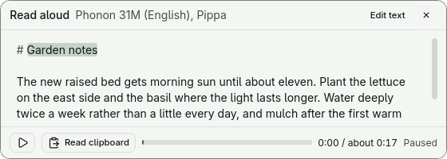

Read aloud
A shortcut reads the text you last copied, in a popup that follows along. Reading runs on your own computer with a voice model you download.

- Shortcut: Super+Alt+R by default.
- Follow-along popup: highlights the sentence being read.
- Streaming and controls: reading is streamed and has speed and pitch controls.
- Markdown: marks are not spoken, and code blocks are skipped unless you ask for them; a code block that holds only a table is read as a table.
- Tables: read row by row, each value with its column name. See Tables.
- Technical reading: paths, file names, flags, versions and code names are spoken the way an engineer would say them.
- Vocabulary: extend the spoken forms. See Vocabulary.
- No overlap: dictation and reading never overlap.
Voice models
Eight downloadable voice models are offered. The table has six rows because the Indic Tiny TTS row covers three of them: Indian English, Hindi and Punjabi. GPU and NPU mean an Intel GPU or NPU through OpenVINO.
| Voice model | Runs on |
|---|---|
| Pocket TTS | CPU, GPU and NPU in part (see below) |
| Supertonic 3 | CPU, GPU, NPU |
| Kokoro-82M | CPU, GPU, NPU |
| Paradee-8M | CPU |
| Phonon 31M (English) | CPU |
| Indic Tiny TTS (Indian English, Hindi, Punjabi) | CPU, GPU |
- The app picks the best device that works on the machine.
- Pocket TTS keeps part of its work on the CPU (ONNX Runtime). On the GPU only its text conditioner runs there, and its main flow model, flow sampler and audio decoder stay on the CPU. On the NPU its main flow model stays on the CPU.
- The device ratings shown in Models were measured on one machine. Other hardware may rank devices differently.